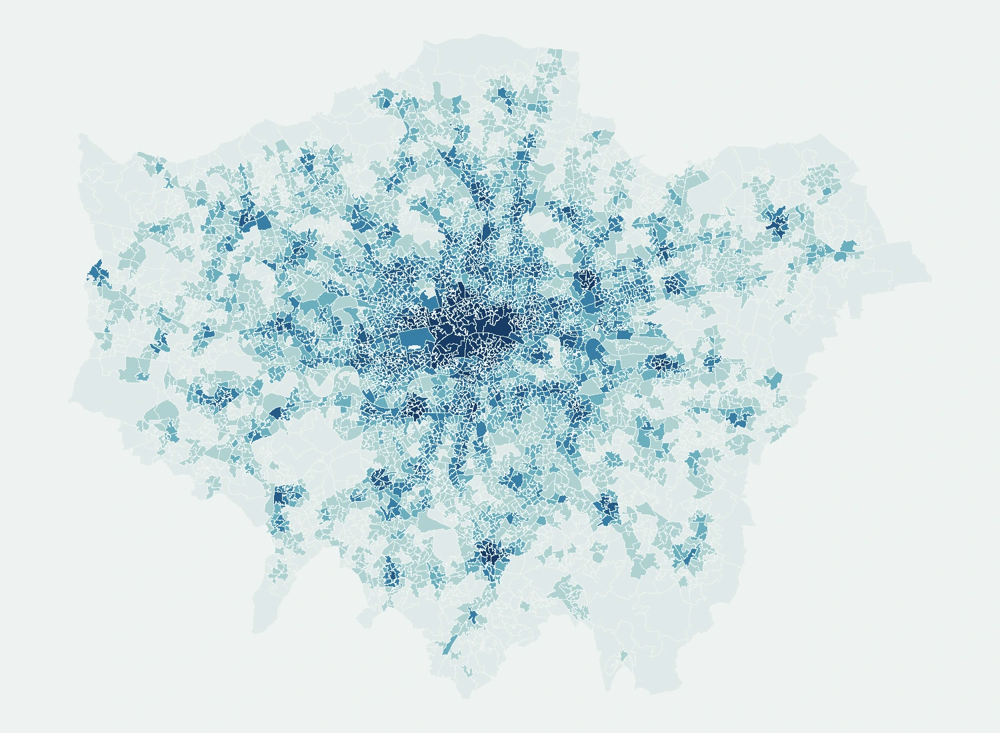

UCL · MSc Urban Spatial Science
用数据理解城市，
让分析走向决策。
我是陶思言，关注数据分析与空间分析。从消防响应、交通可达性到零售选址，我把复杂的城市问题转化为可解释的模型和可交互的地图。
01 / DATA ANALYTICS02 / GIS & SPATIAL MODELLING
LONDON / ACCESSIBILITY ATLAS51.5072° N

4,994个 LSOA 分析单元
平均可达性指数0 40+
项目数据 · LSOA 均值概览 · 非实时地图
从问题到证据Python / RGeoPandas / GISStatistical modellingInteractive maps
SELECTED WORK / 2025–2026
硕士项目精选
四个切面，理解城市系统如何运行。
FURTHER EXPLORATIONS
更多研究与实践
从预测模型到多主体模拟，拓展分析边界。
ABOUT / SIYAN TAO连接数据、
连接数据、
空间与真实问题。
城市空间科学硕士，具备地理与规划背景。希望将多源数据处理、统计建模与空间可视化能力应用于数据分析、商业分析和 GIS 岗位。
在 GitHub 找到我 ↗教育背景
2025 — 2026University College London
MSc Urban Spatial Science · CASA
2021 — 2025北京师范大学
人文地理与城乡规划
项目中使用的技能
Python · pandas · RGeoPandas · QGIS · ArcGISOLS · Mixed-effects modelsNetworkX · Spatial interactionMapbox GL JS · JavaScriptNetLogo · Agent-based modelling